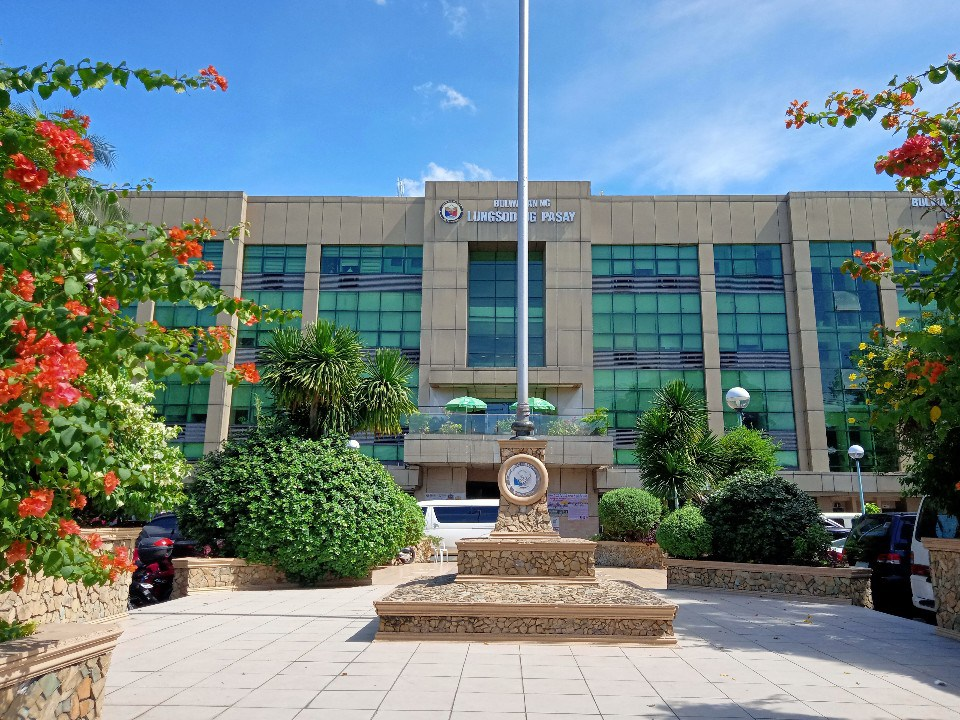

About Justin LRT
Back
Home
Table of contents:
As a student of Pasay City West High School
Photographer
LRT and MRT song composer
Rail enthusiast
Vlogger
Contact us
Home
Table of contents:
 Hello there! My name is Justin and I am a Filipino student of Pasay City West High School, a photographer, song composer of LRT and MRT and rail enthusiast. I'm always ride LRT-1 because I'm enjoying ride LRT of cool air conditioning, fast speeds and safe.
Hello there! My name is Justin and I am a Filipino student of Pasay City West High School, a photographer, song composer of LRT and MRT and rail enthusiast. I'm always ride LRT-1 because I'm enjoying ride LRT of cool air conditioning, fast speeds and safe.
When I was 9 years old in 2016, I like trains and to draw so I can sketch my first LRT train without proper drawing because of my age.
In 2017, I had composed my first LRT-1 song titled 20 Stations of LRT-1 after I heard the song The Twelve Days of Christmas from the FM radio while holding my LRT and MRT system map.
The closing party on March 28, 2019, performed at 4th floor of Welcome Plaza, Taft Avenue, Pasay City, I'm sing the song 20 Stations of LRT-1 and my classmates of Grade 5 section Maunawain are so happy and giving me a loud applause.
The song 20 Stations of LRT-1 was released on March 30, 2019 while the second song 13 Stations of MRT-3 in April 2, 2019.
My YouTube channel named Justin LRT was created on November 15, 2020. I'm always uploading Minecraft videos to grow my channel and get more views amd subscribers. I'm so happy that the video hits 100 views for the first time. And my song I also uploaded it.
My first trainspotting video I've uploaded on YouTube was on September 14, 2021. In March 2022, I'm now uploading train videos instead of Minecraft due to growing of views from the average of 40-80 views per day, its now 90-300 views per day.
In June 2022, my video titled MRT-3 in 4-car configuration reached 1.5k views, this is my first time having more views in just 1 month. The MRT-3 ad wrap is back on August 8, 2022, so I upload the video taken on August 17, 2022 with title of MRT-3 train with ad wrap spotted at Cuabo station and it was reached 1k views in just 6 days.
In August 19, 2022, my first time to go to Pasay City West High School to search my name and I find out what is my section and room in the school's gymnasium. I'm so happy about the first face-to-face classes after 2 years.
In August 23, 2022, the first day of face-to-face classes, I'm so happy to see my classmates and teachers. Unfortunately, the class suspend at 1:52 PM due to heavy rain. Beside of that, my YouTube channel reach 600 views a day in my whole YouTube channel history and there some complains about me that the video was I uploaded is stolen from Facebook group named PTERC. Soon, I'm waiting months to do next.
My first trainspotting video at EDSA-Taft Pasay Rotonda was on November 10, 2022. I'm so excited because I can now doing trainspotting activities in that place.
My first LRT-1 ride in November 17, 2022 from Libertad to EDSA after 4 years. I'm was looking in whole stations and trains to see how good the LRT-1 is.
I'm always taking pictures and videos of LRT because they're supporting me.
As a student of Pasay City West High School

As a student, I'm so exciting in every class because after 2 years of pandemic caused by COVID-19, I finally meet my classmates, friends and even going somewhere. I'm was placed at top 8 in my class because I study hard and I'm doing great at school. I'm so good at drawing, drafting, and lettering since the start of school year.
My teacher adviser, named Mrs. Juliet P. Boncales, and she is my best and beautiful teacher adviser ever seen. She the adviser of 9 - Kamagong and also she is a guidance teacher. Her favorite subject mostly teaching for students is Values.
In every time to go to school, I'm so happy because I can meet all of my friends and to doing vlogging as well.
I'm study harder to pass and I'm was on the top 10 list in my section.
I've rated my classmates in Grade 9 section Kamagong here.
Click here to see about my school.
Photographer
 |
|
 |
 |
|  | |
Some of his photos captured somewhere
I'm always taking pictures somewhere because it's so beautiful and I've taken someone at the school.
I've start photographing in 2021 because of beautiful view outside at top of my house. When the face-to-face classes starts after 2 years, I'm now able to get pictures and videos anywhere.
Click here for more photos of my photographies.
LRT and MRT song composer

The most popular song ever I created, Light Rail Transit Line 1.
I'm always listening and singing my own song because people can hear my song for the first time. My songs that I released is 20 Stations of LRT-1, 13 Stations of LRT-2, 13 Stations of MRT-3, and Light Rail Transit Line 1, which are the songs are made by me.
The most popular song I've created ever is Light Rail Transit Line 1.
View my songs here.
Rail enthusiast
As a rail enthusiast, I'm always taking pictures and videos of LRT-1 because this my part for growing my content and make money. In every school class, I'm always staying at EDSA-Taft Pasay Rotonda for trainspotting and I'm always ride LRT-1 from Libertad to EDSA.Trainspotting
First trainspotting video at 4th floor of my house. Taken August 21, 2021 at 6:52 AM
I started doing trainspotting activities since August 21, 2021 at top of my house where I lived. The first video was taken on the same date.
Then, I want to train spot until 2022. My first long trainspotting at same place on November 5, 2022.
In November 9, 2022, I'm able to go to school only myself so my plan is to do trainspotting in the next day.
My first trainspotting on November 10, 2023 was successful.
In the next following days, I'm now able to stay at EDSA-Taft Pasay Rotonda for trainspotting and staying anywhere.
Hundreds of train spotted since my first trainspotting activities until today. And I'm the most rail enthusiast to upload video per day of trainspotting.
Click here for more information about my LRT-1 trainspotting.
Rides
His first ride after 4 years on November 17, 2022.
I'm riding almost every day because of fresh air conditioning, fast speeds and beautiful outside view.
My first ride after 4 years on November 17, 2022. I'm was so excited to ride the train because I've never ride train after 4 years. I start ride from Libertad and my destination is EDSA.
My first ride from Baclaran to Libertad was on December 15, 2022. I looked the station after years and it was so large.
I had ridden more than 40 times of LRT-1.
Click here for more information about my LRT-1 ride.
Vlogger
I'm doing vlogging anywhere to gain more views. The reason why I'm doing vlogging is because to make my followers, subscribers, and viewers more interact to me.I've started to vlog when I was doing trainspotting at Pasay Rotonda, train ride, and also when there is chaos, unexpected events, dances, programs, presentations, and more at school or anywhere.
Some of my vlogging that I already have:
My vlogging in the school I've already done are:
Contact us
If you want to talk Justin for suggestions, conversations or other inquiries, please contact us by clicking the links below:Call us
Justin LRT Facebook page
Send Email